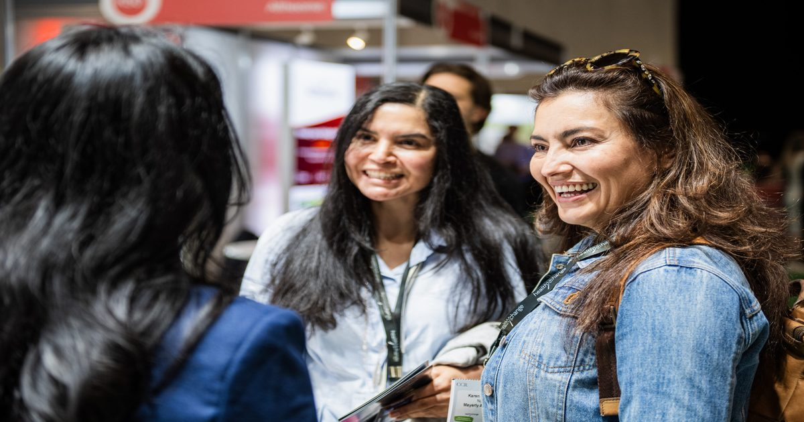

Предварительный просмотр мероприятия: Формирование будущего медицинской эстетики
CCR 2026 предоставила научно обоснованное образование и прорывные инновации Крупнейшая в Великобритании конференция по медицинской эстетике, Конгресс по клинической косметической регенерации (CCR), приветствовала 4078 участников, 160+ экспонентов и 170+ докладчиков в Excel, Лондон, 1-2 октября.
Главным спонсором в этом году стала компания Galderma,...